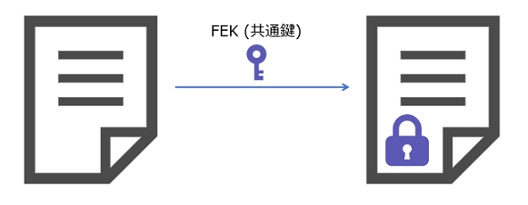
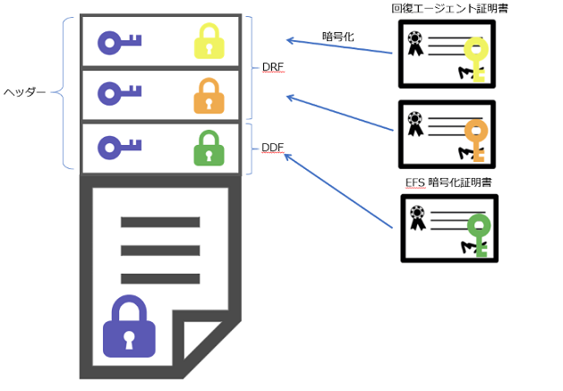

本記事はマイクロソフト社員によって公開されております。
こんにちは。Windows プラットフォーム サポートです。
今回は Windows OS にて標準で利用可能なファイルを暗号化して保護する機能である EFS の仕組みについて紹介します。
1. EFS とは
EFS 暗号化とは、ファイルの機密性を保つためにファイルを暗号化して、他のユーザーがファイルの中身を参照できないようにする機能です。
EFS 暗号化は Windows OS 標準で利用可能な機能で、公開鍵暗号化方式と共通鍵暗号化方式の技術を組み合わせた技術です。
一般的に、個人情報が含まれたデータなど、特定のユーザーのみがみれるようにすべきデータが含まれるファイルを保存する時などに利用されます。
2. EFS の仕組み
EFS 暗号化は、公開鍵暗号化方式と共通鍵暗号化方式の技術を組み合わせた技術です。
公開鍵暗号化方式とは、データの暗号化と復号に使用する鍵が異なる方式で、キーペアとなる公開鍵と秘密鍵を使用します。
また、共通鍵暗号化方式とは、データの暗号化と復号に使用する鍵が共通となる方式で、同じ鍵を使用します。
EFS 暗号化では、ファイルを暗号化する時は共通鍵を利用しますが、その鍵を FEK(the file encryption key)と呼びます。
FEK でファイルを暗号化した後(図①)、公開鍵で暗号化したデータをヘッダとしてファイルに付与します(図②)。
この時、公開鍵として使用するのは、ユーザーが個々に保持する EFS 証明書の公開鍵と、バックアップ用に共通して保持する回復証明書の公開鍵となります。
① ファイルの暗号化

②ヘッダの付与

EFS 暗号化されたファイルを開く時は、EFS 証明書に紐づく秘密鍵を利用してヘッダを復号して FEK を取り出し、また FEK にてファイルを復号します。
EFS 証明書に紐づく秘密鍵を特定のユーザーしか保持していませんので、秘密鍵を保持していない他のユーザーは開くことはできません。
もし、EFS 証明書と秘密鍵が利用できなくなった場合は、回復証明書をインストールして復旧させることができます。
3. ファイルの EFS 暗号化
ファイルを EFS 暗号化する方法は以下の通りです。
(1) 対象のファイルを右クリックして [プロパティ] をクリックします。
(2) [全般] タブにて [詳細設定] をクリックします。
(3) [属性の詳細] にて、[内容を暗号化してデータをセキュリティで保護する] のチェックボックスを有効にて [OK] をクリックします。
(4) [プロパティ] にて、[適用] をクリックします。
(5) [暗号化に関する警告] にて、[ファイルだけを暗号化] を選択し [OK] をクリックします。
(6) [OK] をクリックします。

EFS 暗号化はファイルもしくはフォルダ単位で行うことができます。
EFS 暗号化されているファイルは、鍵マークのアイコンが表示されます。
(Windows 8.1 以前の OS では、ファイル名が緑文字で表示されます。)
EFS 暗号化の作業を行った端末に、すでに EFS 証明書がある場合は、その公開鍵を利用して EFS 暗号化を行います。
もし EFS 証明書がない場合は、自動で EFS 証明書を発行した上で、その公開鍵を利用します。
その端末がドメイン端末で、かつドメインにエンタープライズ CA が存在する場合、エンタープライズ CA から EFS 証明書が発行されます。
そうでなければ、自己署名の EFS 証明書が発行されます。
4. EFS 証明書と回復証明書の確認方法
ファイルの EFS 暗号化に使用された EFS 証明書、回復証明書の情報は以下の手順で確認できます。
(1) 対象の EFS 暗号化ファイルを右クリックして [プロパティ] をクリックします。
(2) [全般] タブにて [詳細設定] をクリックします。
(3) [属性の詳細] にて、[詳細] をクリックします。
(4) [このファイルにアクセスできるユーザー] の項目にある [証明書の拇印] が、EFS 証明書の拇印の情報です。
(5) [回復ポリシーで定義されているこのファイルの回復証明書] の項目にある [証明書の拇印] が、EFS 証明書の拇印の情報です。

5. 回復証明書で復旧
何等かの要因で EFS 証明書が利用不可となると、ヘッダを復号する秘密鍵がなくなるため、EFS 暗号化されたファイルが開けなくなります。
EFS 証明書が利用できなくなった場合の復旧策として、回復証明書が存在します。
図①の通り、EFS 証明書で暗号化したヘッダと併せて、回復証明書で暗号化したヘッダも付与されております。
EFS 暗号化されたファイルを復号する(ファイルを開いたり、EFS 暗号化を解除する)には、回復証明書の公開鍵のキーペアとなる秘密鍵が必要です。
そのため、作業ユーザーの個人の証明書ストアに回復証明書を秘密キー付きでインストールすれば、EFS 暗号化ファイルを復号できます。
復旧作業として回復証明書をインストールした後に、ファイルのEFS 暗号化を解除します。
インストールする回復証明書の情報は “4. EFS 証明書と回復証明書の確認方法” の手順をご確認ください。
- EFS 暗号化解除の手順
[1] 回復証明書の登録
(1) 対象の端末に任意の作業ユーザーでログオンします。
(2) 端末の任意のフォルダに回復証明書(pfx)のエクスポート ファイルを保存します。
(3) pfx ファイルをダブルクリックして、ウィザードを開きます。
(4) [証明書のインポート ウィザード] にて、[保存場所] に [現在のユーザー] を選択して [次へ] をクリックします。
(5) [インポートする証明書ファイル] にて、[ファイル名] の項目に回復証明書のエクスポート ファイルのパスが
選択されていることを確認し、[次へ] をクリックします。
(6) [パスワード] に回復証明書のインポート パスワードを入力して [次へ] をクリックします。
(7) [証明書ストア] に、[証明書をすべて次のストアに配置する] を選択して “個人” を選択し [次へ] をクリックします。
(8) [証明書のインポート ウィザードの完了] にて [完了] をクリックします。
(9) [正しくインポートされました] にて [OK] をクリックします。
[2] EFS 暗号化の解除
(1) 対象の EFS ファイルを右クリックして [プロパティ] をクリックします。
(2) [全般] タブより [詳細設定] をクリックします。
(3) [属性の詳細] の [内容を暗号化してデータをセキュリティで保護する] のチェックボックスを外して [OK] をクリックします。
(4) プロパティ画面にて、[適用]、[OK] をクリックします。
※ EFS 暗号化ファイルの復元作業後の注意点 ※
作業ユーザーの [個人] の証明書ストアに登録した回復証明書は、EFS 暗号化ファイルの EFS 暗号化の解除作業が完了した時点で必ず削除するようにしてください。
回復証明書はドメイン内の端末にある全ての EFS 暗号化ファイルを復号できてしまうため、復旧作業完了後も作業ユーザーの個人の証明書ストアに登録したままとするのは、セキュリティ リスクの高い運用となります。
復旧作業が完了したら、必ず作業ユーザーの証明書ストアから回復証明書は削除し、引き続き回復証明書の pfx ファイルは厳密に管理いただければと存じます。
6. 回復証明書の設定
ドメイン内に回復証明書を設定していれば、EFS 証明書の秘密鍵が利用不可の状態となったとしても、EFS 暗号化されたファイルを復元できます。
既定では Administrator という回復証明書が設定されており、ドメイン構築時の最初の 1 台目のドメイン コントローラーの “Administrator” のアカウントに個人ストアに保存されています。
既定の回復証明書を変更したい場合、以下のポリシーにより変更することができます。
ポリシー：[コンピューターの構成] - [ポリシー] - [Windows の設定] - [公開キーのポリシー] - [暗号化ファイル システム]

cipher /r コマンド等で回復証明書を用意し、以下の手順でドメイン環境に設定する回復証明書を変更します。
(1) ドメイン コントローラーに管理者権限をもつユーザーでログオンします。
(2) 任意のフォルダに用意した回復証明書の CER ファイルを保存します。
(3) [Windows 管理ツール] より [ドメイン ポリシーの管理] を開きます。
(4) [グループ ポリシーの管理] より、画面の左ペインにて “Default Domain Policy” を右クリックして [編集] をクリックします。
(5) [グループ ポリシーの管理エディター] より、[コンピューターの構成] - [ポリシー] - [Windows の設定] - [公開キーのポリシー] - [暗号化ファイル システム] を右クリックして [データ回復エージェントの追加] をクリックします。
(6) [回復エージェントの追加ウィザードの開始] にて [次へ] をクリックします。
(7) [フォルダーの参照] をクリックして、回復証明書の CER ファイルを選択します。
(8) [回復エージェントの追加] にて [はい] をクリックします。
(9) [次へ] をクリックします。
(10) [回復エージェントの追加ウィザードの完了] にて [完了] をクリックします。
上記のポリシーの設定が各ドメイン端末に適用された後、EFS 暗号化されたファイルを開く等、ファイルが復号されたタイミングにおいて回復証明書のヘッダが追加されます。